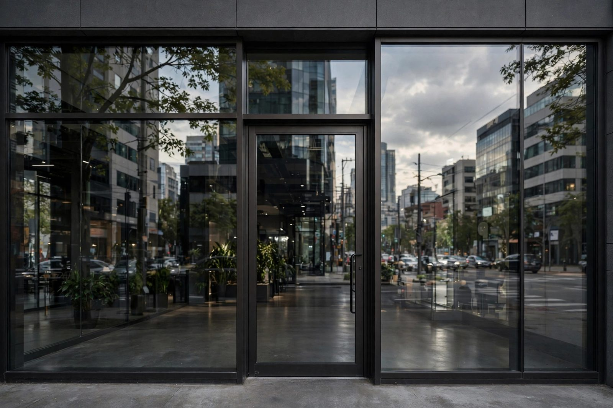

GTA High Glass
Business website for a glass and glazing company in the Greater Toronto Area

Overview
GTA High Glass is a professional multi-page website built for a glass and glazing contractor serving the Greater Toronto Area. The site communicates the company's range of services, residential window installation, commercial glazing, and emergency glass repair, through a structured services showcase, a filterable project gallery, and a quote request form that routes enquiries directly to the business inbox. The design system uses a corporate palette of blues and cool greys to evoke the precision and clarity associated with the glass trade. Both desktop and mobile users are fully supported through a mobile-first responsive layout, with particular attention paid to consistent gallery image proportions and hero section rendering on mobile Safari. The project demonstrates a complete brief-to-deployment workflow for a trade business with a strong local service area.
Architecture
Tech Stack
- HTML5, Semantic elements including
<article>for service cards,<figure>/<figcaption>for gallery images;loading="lazy"on all gallery<img>tags - CSS3, CSS custom properties for the full design system; CSS Grid with
auto-fillandminmax()for the gallery; Flexbox for navigation and service card rows - CSS
aspect-ratio, Enforces uniform image proportions in the gallery grid across all viewport widths without JavaScript - Responsive Design, Mobile-first layout with breakpoints at 480 px, 768 px, and 1024 px; Safari-specific hero background fix via
@media (hover: none) - Image Optimisation, Images compressed in Squoosh and served as WebP with
<picture>+ JPEG fallback for full browser compatibility
Build Process
Documented services offered (residential glazing, commercial storefronts, emergency board-up, glass repair), identified the target audience (homeowners and commercial property managers in the GTA), and analysed three competitor sites to benchmark navigation patterns, service presentation hierarchy, and quote form placements before writing a single line of code.
Selected a palette evoking glass and precision construction, slate blue for primary interactive elements, steel grey for surfaces, and white for content areas. All tokens were encoded as CSS custom properties so the three pages remain visually consistent without duplicated rules.
:root {
--color-primary: #1565c0; /* corporate blue */
--color-secondary: #546e7a; /* steel grey */
--color-surface: #f5f7fa;
--color-text: #1c2a35;
--font-heading: 'Roboto Condensed', sans-serif;
--font-body: 'Roboto', sans-serif;
--radius-card: 6px;
--space-md: 1.5rem;
--space-lg: 3rem;
}Service cards on index.html use <article class="service-card"> with an SVG icon, heading, and description, giving screen readers meaningful document structure. The gallery page uses <ul class="gallery-grid"> with <li><figure><img><figcaption> for full accessibility and image SEO. Explicit width and height attributes on every <img> prevent layout shift (CLS) during lazy load.
The gallery uses auto-fill with minmax() so the column count responds to the viewport naturally, no breakpoints needed for the grid itself. Images use aspect-ratio: 4 / 3 with object-fit: cover to lock proportions regardless of source dimensions.
.gallery-grid {
display: grid;
grid-template-columns: repeat(auto-fill, minmax(280px, 1fr));
gap: 1rem;
}
.gallery-grid figure img {
width: 100%;
aspect-ratio: 4 / 3;
object-fit: cover;
display: block;
border-radius: var(--radius-card);
}All images were compressed using Squoosh and exported as WebP. The <picture> element with a JPEG fallback ensures the optimised format is served to modern browsers while older ones receive a compatible file. The loading="lazy" attribute defers off-screen images, reducing initial page weight significantly.
<picture>
<source srcset="images/project-01.webp" type="image/webp">
<img src="images/project-01.jpg"
alt="Commercial storefront glazing installation, GTA"
loading="lazy" width="800" height="600">
</picture>The contact form collects name, phone, email, service type (select dropdown), and project description. HTML5 built-in validation attributes, required, type="email", pattern, provide a client-side validation layer before the form is submitted. A mailto: action opens the user's email client pre-populated. The finished site was deployed to GitHub Pages from the main branch.
Visitor Journey Flow
Challenges & Solutions
Gallery Image Aspect Ratio Inconsistency. Client-supplied photos arrived in mixed portrait, landscape, and square orientations, making the gallery grid look ragged. The CSS aspect-ratio: 4 / 3 property combined with object-fit: cover enforced uniform cell dimensions without distorting any image. This modern one-property solution replaced a fragile padding-top percentage hack and required no JavaScript.
Hero Background on Mobile Safari. The hero section used background-attachment: fixed for a parallax effect, a known render bug on iOS Safari causes the image to appear blank or mispositioned. The fix uses a @media (hover: none) query to target touch devices and switches the attachment to scroll with background-size: cover; background-position: center, preserving the visual intent while eliminating the Safari issue entirely.
What I Learned
- CSS Grid
auto-fillwithminmax()produces genuinely responsive layouts that require no media queries on the grid itself - The
aspect-ratioCSS property is the correct modern solution for locking image dimensions, cleaner than padding-top hacks background-attachment: fixedmust be conditionally disabled on touch devices to avoid a long-standing iOS Safari rendering bug- Providing explicit
widthandheightattributes on every<img>prevents cumulative layout shift even when images are lazy-loaded - The
<picture>element with WebP source and JPEG fallback is the correct pattern for progressive image format adoption - A structured brief and competitor analysis phase surfaces content and layout requirements before implementation begins, reducing rework
How I Built It
Phase 1: Brief and competitor analysis. Before writing any code, I worked through a structured brief and competitor analysis to pin down the content and layout requirements: services, service area, gallery, reviews, and a quote request path. That discovery phase kept implementation from drifting.
Phase 2: Responsive layout. The site is built on CSS Grid with auto-fill and minmax(), which produces genuinely responsive layouts with no media queries needed on the grid itself. Every <img> carries explicit width and height attributes to prevent cumulative layout shift even with lazy loading.
Phase 3: Client photo gallery. Client-supplied photos arrived in mixed orientations, so each gallery cell enforces aspect-ratio: 4 / 3 with object-fit: cover, producing a uniform grid without distorting any image. The <picture> element serves WebP with a JPEG fallback for progressive image format adoption.
Phase 4: Hero and quote form. The hero section and quote request form were built and wired, with validation on the client side before any submission.
Phase 5: Mobile Safari fixes and shipping. A long-standing iOS Safari bug with background-attachment: fixed blanked the hero on touch devices, so a @media (hover: none) query switches to scroll attachment with cover sizing. Final checks, then the site shipped.
What You Need
| Category | Item | Notes |
|---|---|---|
| Tool | A modern web browser | Static site; test in desktop and mobile Safari specifically |
| Software | Code editor | Used for the multi-page build |
| Software | Image editor or converter | For producing WebP versions and resized gallery assets |
| Skill | HTML5 semantic markup | Service pages, gallery, quote form, consistent nav |
| Skill | CSS Grid and aspect-ratio | Responsive grids and uniform gallery cells from mixed-orientation photos |
| Skill | Responsive image formats | <picture> with WebP source and JPEG fallback |
| Skill | Client communication | Brief, feedback rounds, and photo collection for a real business |
| Account | Static host | Where the live site is published |
Challenges and Lessons Learned
Mixed-orientation client photos. You cannot control what a client sends you. aspect-ratio plus object-fit: cover turned an unpredictable asset pile into a clean grid with one modern property instead of the old padding-top percentage hack. Lesson: build layouts that are robust to imperfect inputs.
The iOS Safari fixed-background bug. Parallax that looks perfect on desktop can render blank on an iPhone. The (hover: none) media query is now my default pattern for touch-device fallbacks whenever I reach for fixed attachment.
Discovery before code. The structured brief and competitor analysis surfaced requirements that would otherwise have arrived as rework halfway through the build. An hour of analysis saved several hours of refactoring.
What Is Next
- Online quote calculator: window dimensions in, price estimate out, before the form submission
- Before-and-after project gallery with a comparison slider
- Customer review integration with schema.org review markup for search rich results
- Service-area pages for neighbouring GTA cities to strengthen local SEO
- Contact form spam protection (honeypot or a lightweight captcha) once submission volume grows